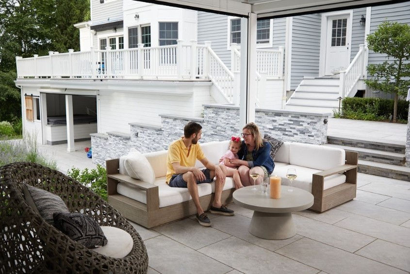

This is one of the most common questions homeowners ask once they start using the area under a raised deck. You put a table and chairs on the patio, maybe a grill or some storage, and the first real rain sends water through every board gap and onto everything underneath. Then it keeps dripping from the joists for a good while after the rain stops. Nothing is broken. That is how most decks are designed to work.
Why your deck drips: it was built to
A conventional deck is meant to drain through itself. The boards are spaced with a gap so rain falls between them instead of pooling on top. That gap also lets debris wash through, gives the boards room to move with temperature and moisture, and lets air reach the framing so it can dry. On a deck over open ground, all of that is fine. The trouble starts when you want to use the space below.
The dripping that continues after a storm comes from water that ran down through the gaps and landed on the tops of the joists and beams. Wood holds that water and lets it go slowly, so it keeps falling off the bottom edges of the framing for a while. It is also the same moisture that soaks into the tops of the joists on every rain, which is the slow process we cover in why decks rot from the top down.
A standard deck is a strainer, not a roof. The gaps are doing exactly what they were designed to do.
First, rule out the water that is not coming through the gaps
Before you blame the boards, spend a rainy afternoon under the deck with a flashlight and watch where the water actually shows up. Some of the worst leaks have nothing to do with board gaps.
- Overflowing gutters above the deck. A clogged or undersized gutter on the roof above can dump a sheet of water onto one section of the deck, which then pours through in a concentrated stream.
- Downspouts that discharge onto the deck. A downspout that empties onto the deck surface sends a whole roof section's runoff through a few board gaps.
- Water along the house wall. Dripping or staining right where the deck meets the house can point to missing or failed ledger flashing. That one deserves attention quickly, because water there runs into the rim joist and the band of the house, not just onto your patio.
- Splash and wind-driven rain. If the wet areas are mostly near the open sides, some of it may simply be rain blowing in sideways, which no deck surface can stop.
Fixing a gutter or redirecting a downspout is cheap and can make a real difference. If the dripping is spread evenly across the whole underside, though, it is the gaps, and the rest of this article is about that.
Quick fixes that usually backfire
When the patio is soaked, it is tempting to grab a tube of caulk or a roll of plastic. Most of these shortcuts move the problem rather than solve it.
Worth doing now
- Clean gutters and extend downspouts away from the deck
- Check the ledger flashing where the deck meets the house
- Keep board gaps clear of leaves and debris
- Move furniture and storage you care about out of the drip zone
- Note where water collects so you can plan a real fix
Avoid
- Caulking or filling the gaps between existing boards
- Stapling plastic sheeting over the joists under the boards
- Laying a tarp flat on top of the deck
- Expecting a stain or sealer to stop water between boards
- Hanging anything that holds water against the framing
Caulking the gaps fights the way the boards were installed. Boards move, so caulk tends to crack, pull loose, or squeeze out, and once the gaps are blocked, water and debris sit on the surface with nowhere to go. It can also conflict with the board manufacturer's spacing requirements. Plastic over the joists catches water right on top of the framing and holds it there, which is the opposite of what the wood needs. Sealers and stains slow how fast a wood board absorbs water, but they do nothing about the open space between boards.
The options that actually work
Once you rule out shortcuts, there are really two ways to keep rain off the space under a deck. The difference is where the water gets stopped, and that difference decides whether your framing stays dry too.
Catch it below the joists. A below-joist system is a set of trays, panels, or a membrane hung under the framing and sloped to a gutter. Because it never touches the deck surface, it can be added to a deck you already own, and it does make the area below usable. The tradeoff is that rain still runs through the boards and over the joists, beams, and ledger on every storm before it gets caught. The framing stays wet, and it is now hidden behind a ceiling where you cannot easily inspect it. Our under-deck drainage systems comparison walks through the types.
Stop it at the surface. An above-joist approach closes the gaps at the walking surface so rain sheds off the deck the way it runs off a roof. The framing never gets wet, so the underside can be left open or finished as a ceiling. With AmeriDex, the deck boards themselves are the waterproof layer: cellular PVC boards with a Dexerdry seal, made from automotive-grade TPE, locked between every board as the deck is built. Waterproof decking explains how that compares to membranes, aluminum planks, and coatings.
The catch is timing. A sealed surface has to be built that way. AmeriDex cannot be added to boards that are already installed, so on an existing deck the only route is a full re-deck: the old boards come off, and if the existing framing qualifies, AmeriDex goes down on it. We cover exactly how to check that in can you add a dry-space system to an existing deck, and the full side-by-side is in the above-joist vs below-joist buyer's guide.
What a surface-sealed deck needs to work
A deck that sheds water off the top has to be built to drain, which is why the details matter more than on an ordinary deck. Per the Dexerdry installation requirements, a few of the big ones are:
- Pitch. The deck needs 1/8 inch per foot of slope for proper runoff, falling away from the house where the boards run perpendicular to it.
- Overhang. Boards overhang the outside of the framing by 1 3/8 inches so water drips clear of the structure instead of running back underneath.
- Ledger flashing first. The ledger and the wall above it are flashed before any decking goes down.
- Top-mount fasteners. Hidden clips cannot be used, because the seal occupies the board groove the clips would use.
- Framing at 16 inches on center. AmeriDex specifies 16 inch on-center joist spacing for residential decks.
- Exterior only. The system is not intended for use over interior living space.
It also helps to be realistic about the edges. A sealed deck surface keeps rain from coming through the top, and that water has to go somewhere, so plan the low edge with a gutter or a spot where runoff can drain away from the house. Open-sided areas underneath can still get some wind-driven rain, the same as any covered porch. Builders can find the details on our contractor resources page.
Your deck drips because it was designed to drain through its gaps. Fix gutters and flashing first, skip the caulk and plastic, and then choose between catching water under the joists or stopping it at the surface. Only the surface option keeps the framing dry, and it has to be built in during a new deck or a full re-deck.
Planning a new deck or a re-deck?
If you are building new or your boards are due for replacement anyway, that is the moment to decide whether you want the space below to stay dry. Start a free quote and tell us the deck size, height, and how the boards run relative to the house, and we will help you sort out what it takes. Request free samples to see and feel the boards and the Dexerdry seal, or read how to keep the space under your deck dry for the bigger picture.